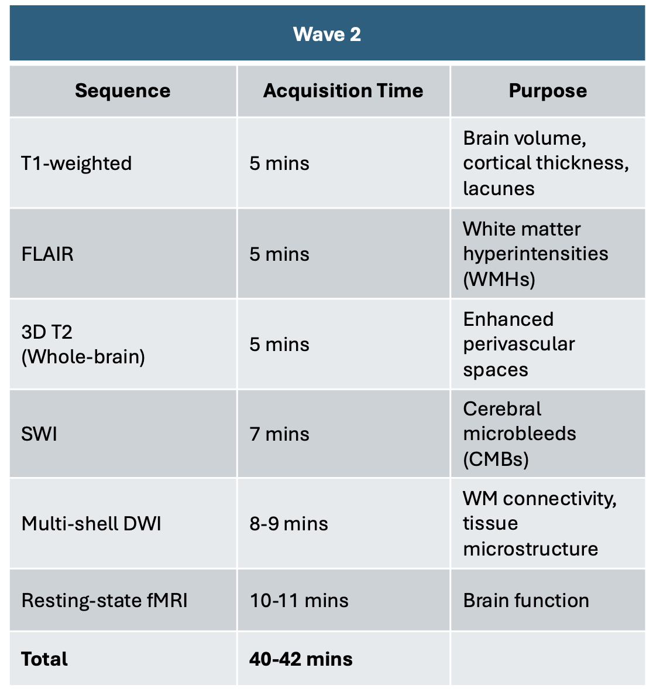

LASI-DAD collected N=638 MRI scans between March 2024 and May 2025 as part of its Wave 2 data collection.
The LASI-DAD Wave 2 MRI protocol is based on the ADNI-3 and ADNI-4 protocols.
As with the Wave 1 pilot study, the Wave 2 protocol was designed for 3T MRI scanners (either a Siemens or Philips scanner) with 32-channel head coils.
The protocol was designed to account for several considerations. The first was to minimize overall scanning time to ease the burden on older participants,
some of whom traveled long distances from rural residences to urban imaging centers. The target scanning time was therefore set to be in the range of 40-45 minutes.
The second was to measure a variety of cerebrovascular pathologies related to cerebral small vessel disease (CSVD),
which is expected to be prevalent in the Indian population due to the high cardiometabolic risk factor and air pollution exposures.
As a result, in addition to conventional T1w and FLAIR scans, which measure brain structure, lacunes and white matter damage, we included whole-brain 3D T2w imaging,
to measure perivascular spaces as well as SWI to measure cerebral microbleeds. To minimize scanning time, we did not include a high-resolution hippocampal T2w sequence.
To measure brain microstructure and white matter connectivity we included a multi-shell DWI sequence with b = 1000 and b = 2000 s/mm2 shells, foregoing the b=500 s/mm2 shell
that ADNI implements in its advanced diffusion sequence to minimize scanning time and reduce protocol complexity.
We also included an accelerated resting state fMRI sequence to measure functional connectivity.
Scanning took place at 11 MRI centers across India. Sites are listed in the Neuroimaging Centers section of the team page.
The 3T MRI protocol, which took between 40 and 42 minutes at most sites, is summarized in the figure below.

References: